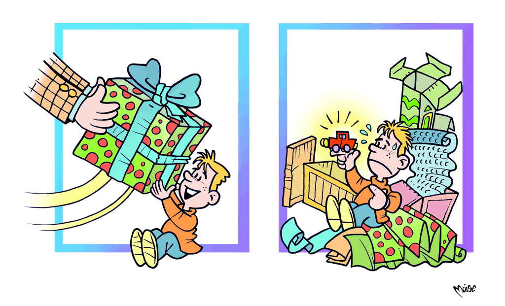

Imballaggi
Dalla notte dei tempi l'uomo si è posto il problema di contenere e proteggere cibi, manufatti e merci. I primi contenitori furono conchiglie, tronchi cavi, visceri di animali. Seguirono le ceste per i frutti, anfore per vino e olio, fiale per i profumi, giare, scatole, urne o bisacce. La storia degli imballaggi si evolve con la storia dell'uomo; sono utilizzati nel tempo nuovi materiali e nuove forme: al legno, si affianca la terracotta, il vetro e i metalli. Nel secolo scorso è avvenuta una rivoluzione che ha riguardato non solo i metodi, le forme e i materiali (lattine, materie plastiche, ecc), ma anche la tipologia di merce da imballare e la funzione stessa dell'imballaggio. Con l'avvento della società dei consumi e la crescita capillare della distribuzione è cambiato il ruolo che gli oggetti e le merci assumono nella nostra vita quotidiana, sono aumentate le distanze tra i centri di produzione e i luoghi di consumo dei prodotti e, di conseguenza, i loro imballaggi.
Non esistono quasi più le merci sfuse inserite senza contenitori nella borsa della spesa. E l'imballaggio è diventato uno strumento di marketing e di comunicazione che, oltre a fornire le informazioni necessarie sui contenuti, ha l'obiettivo di indurre il consumatore alla scelta.
Oggi un terzo dei rifiuti dei prodotti domestici è costituito da imballaggi. Questo ha spinto le aziende produttrici a ricercare nuove modalità di confezionamento dei prodotti, con l'obiettivo di ridurre la quantità di materia: le lattine e le vaschette sono diventate più leggere, i fogli più sottili, è diminuito il peso e lo spessore delle bottiglie di plastica. E gli imballaggi sono diventati più eco–sostenibili.
